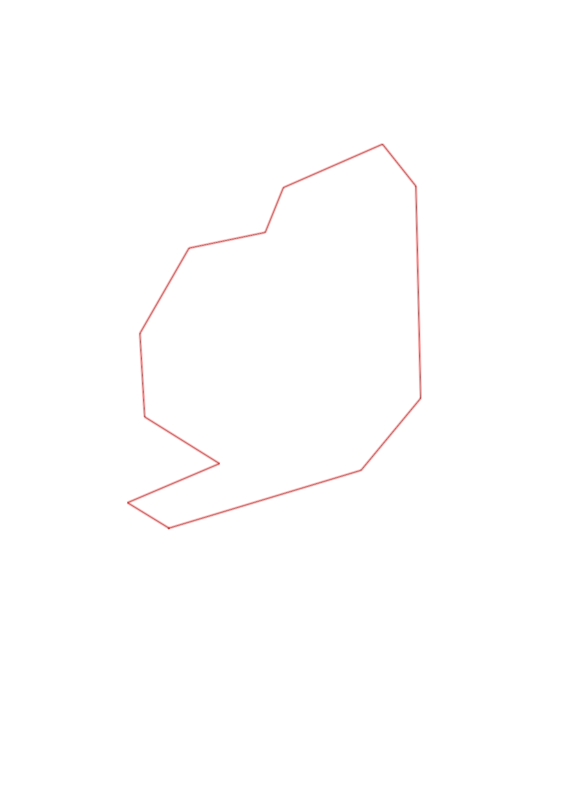
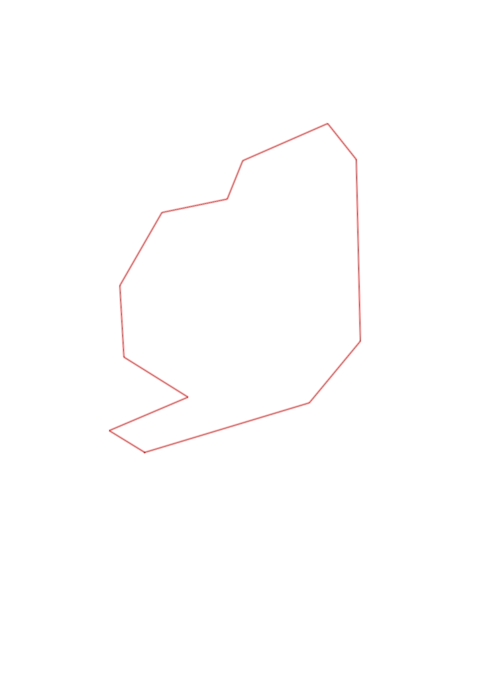

| Control |
Points |
Time Punched |
Distance |
Your Time |
Pace |
Place |
Fastest Time |
Median Time |
% Behind Fastest |
| 60 |
60 |
|
1.11 |
0:10:32 |
09:29 |
2 / 2 |
0:04:57 |
0:07:44 |
112% |
| 81 |
80 |
|
0.52 |
0:07:24 |
14:13 |
11 / 11 |
0:03:21 |
0:04:40 |
120% |
| 67 |
60 |
|
1.17 |
0:08:15 |
07:03 |
1 / 1 |
0:08:15 |
0:08:15 |
0% |
| 47 |
40 |
|
0.3 |
0:02:38 |
08:46 |
1 / 2 |
0:02:38 |
0:02:41 |
0% |
| 77 |
70 |
|
0.6 |
0:08:46 |
14:36 |
1 / 1 |
0:08:46 |
0:08:46 |
0% |
| 39 |
30 |
|
0.27 |
0:02:19 |
08:34 |
2 / 2 |
0:01:55 |
0:02:07 |
20% |
| 44 |
40 |
|
0.43 |
0:03:02 |
07:03 |
1 / 2 |
0:03:02 |
0:03:13 |
0% |
| 53 |
50 |
|
0.54 |
0:03:18 |
06:06 |
1 / 2 |
0:03:18 |
0:05:04 |
0% |
| 58 |
50 |
|
0.46 |
0:03:20 |
07:14 |
1 / 3 |
0:03:20 |
0:03:48 |
0% |
| 41 |
40 |
|
0.49 |
0:03:39 |
07:26 |
1 / 4 |
0:03:39 |
0:04:05 |
0% |
| 35 |
30 |
|
0.55 |
0:04:06 |
07:27 |
1 / 1 |
0:04:06 |
0:04:06 |
0% |
| Finish |
0 |
|
0.27 |
0:01:23 |
05:07 |
1 / 10 |
0:01:23 |
0:01:33 |
0% |
Total Distance Covered: 6.71km
Points Scored: 550
Late Penalty: 0
Final Score: 550
Total Time: 0hours 58minutes 42seconds
Efficiency: 81.97 points/km
 
